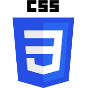
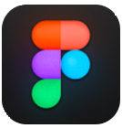

CSS firework show
-
Role.
Frontend
-
Team/individual.
Individual
-
Project type.
School
-
Year.
2022
-
Tools.

- 
- 
Link to: The Github repo & Github pages
This is a small project from the Minor web design and development at the Amsterdam University of Applied Science. I thought this was one of the more fun assignments because we were very free in what we wanted to learn and experiment with. As long as it had to do with CSS, everything was fine.
The assignment
In this four-week course you will experiment with (for you) new CSS techniques - in order to create an innovative, experimental and pleasant experience afterwards - using only vanilla HTML and vanilla CSS (frameworks, preprocessors, libraries and JavaScript are not allowed).
To experiment, I made a special codepen for this course: CodePen. This way my way to experiment freely without having to fear damaging the rest of my code.